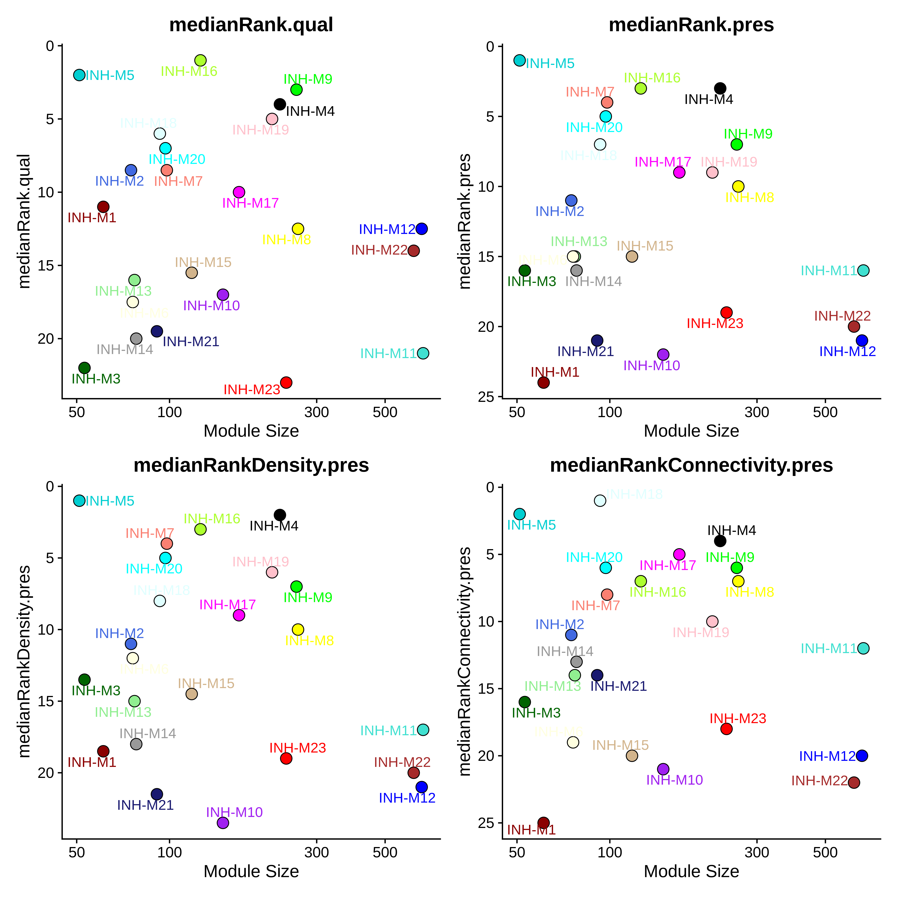
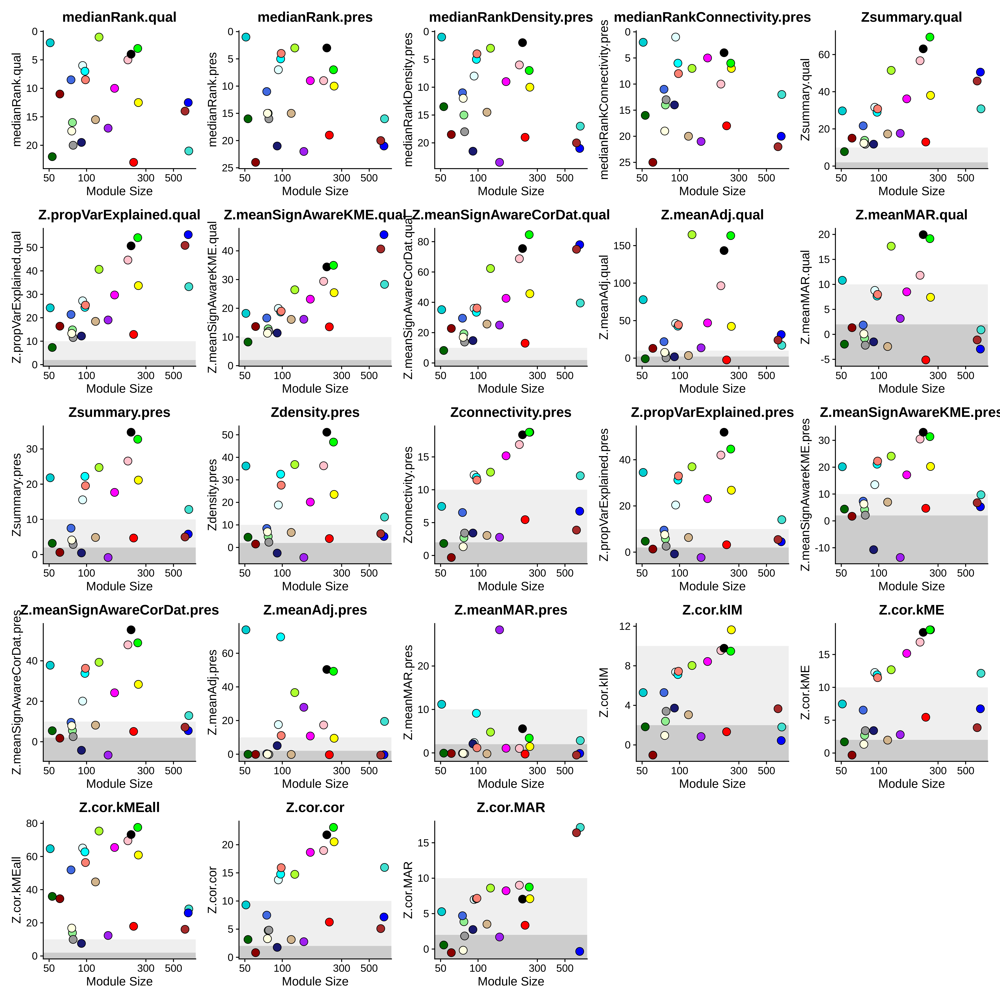

Module preservation and reproducibility
module_preservation.RmdData-driven models are thought to be useful when they are generalizable across different datasets. If we think about co-expression networks from this perspective, we need a way to statistically quantify the conservation of co-expression modules that were identified in one datasets across external datasets. This is a common theme in machine learning, where a model is learned on a training dataset but evaluated using an external validation dataset.
In the previous tutorial, we projected the co-expression modules from a reference to a query dataset, but we did not quantify the degree to which these modules were preserved across datasets. In this tutorial, we perform statistical tests to estimate the conservation of projected modules.
First we must load the data and the required libraries:
# single-cell analysis package
library(Seurat)
# plotting and data science packages
library(tidyverse)
library(cowplot)
library(patchwork)
# co-expression network analysis packages:
library(WGCNA)
library(hdWGCNA)
# network analysis & visualization package:
library(igraph)
# using the cowplot theme for ggplot
theme_set(theme_cowplot())
# set random seed for reproducibility
set.seed(12345)
# load the Zhou et al snRNA-seq dataset
seurat_ref <- readRDS('data/Zhou_control.rds')
# load the Morabito & Miyoshi 2021 snRNA-seq dataset
seurat_query <- readRDS(file=paste0(data_dir, 'Morabito_Miyoshi_2021_control.rds'))Module preservation analysis
In their 2011 paper titled “Is My Network Module Preserved and Reproducible?”, Langfelder et al discuss statistical methods for module preservation analysis in co-expression network analysis. Notably, module preservation analysis can be used to assess the reproducibility of co-expression networks, but it can also be used for specific biological analyses, for example to identify which modules are significantly preserved across different disease conditions, tissues, developmental stages, or even evolutionary time.
The first step in module preservation analysis is to project modules from a reference to a query dataset, which is explained in more detail in the previous tutorial.
seurat_query <- ProjectModules(
seurat_obj = seurat_query,
seurat_ref = seurat_ref,
wgcna_name = "INH",
wgcna_name_proj="INH_projected",
assay="RNA" # assay for query dataset
)Next, we set up the expression matrices for the query and reference datasets.
# set dat expr for reference dataset
seurat_ref <- SetDatExpr(
seurat_ref,
group_name = "INH",
group.by = "cell_type"
)
# set dat expr for query dataset:
seurat_query <- SetDatExpr(
seurat_query,
group_name = "INH",
group.by = "cell_type",
use_metacells = FALSE
)Now we can run the ModulePreservation function. Note that this function does take a while to run since it is permutation based, but it can be sped up by lowering the n_permutations parameter, but we do not recommend any lower than 100 permutations. Also note that the parallel option currently does not work.
# run module preservation function
seurat_query <- ModulePreservation(
seurat_query,
seurat_ref = seurat_ref,
name="Zhou-INH",
verbose=3,
n_permutations=250
)
# getthe module preservation table
mod_pres <- GetModulePreservation(seurat_query, "Zhou-INH")$Z
obs_df <- GetModulePreservation(seurat_query, "Zhou-INH")$obs
grep('summary', colnames(mod_pres))
grep('summary', colnames(obs))Please consult this tutorial for an explanation of the different stats. Currently working on writing up a description of the stats on this page. The visualizations are inspired by those included in the original WGCNA module preservation tutorials.
Visualize preservation stats
In this section, we use the function PlotModulePreservation to visualize the statistics we computed in the previous section. This function generates a scatter plot showing the module size versus the module preservation stats.
plot_list <- PlotModulePreservation(
seurat_query,
name="Zhou-INH",
statistics = "summary"
)
wrap_plots(plot_list, ncol=2)
Plot the ranking stats
# plot ranking stats
plot_list <- PlotModulePreservation(
seurat_query,
name="Zhou-INH",
statistics = "rank"
)
png(paste0(fig_dir, 'module_preservation_rank.png'), width=10, height=10, res=400, units='in')
wrap_plots(plot_list, ncol=2)
dev.off()
Plot all of the different stats:
plot_list <- PlotModulePreservation(
seurat_query,
name="Zhou-INH",
statistics = "all",
plot_labels=FALSE
)
wrap_plots(plot_list, ncol=6)